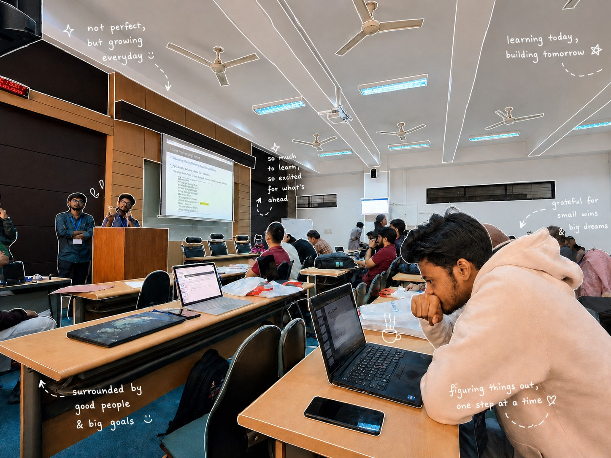

My life story
My life story (so far)

A friend once reminded me that my story is what sets me apart. For a long time, I hesitated to embrace it — but they were right. So, here is a short, honest account of how I got here.
I grew up in Dhaka, Bangladesh.
My interest in computers started early, but it took university to turn that interest into something real.
I joined BNIST in February 2023 to study Computer Science & Engineering. The first semester was a recalibration. Linear algebra, probability, and data structures were suddenly more than subjects — they were the vocabulary of a discipline I wanted to master.
I started building things. Small scripts, then models, then full pipelines.
My first serious project was a hybrid recommendation system for a local business — a mix of collaborative filtering and content-based embeddings. It wasn't glamorous, but it worked. It produced a 10% increase in sales over three months. That result told me everything I needed to know: production systems are where real learning happens.
I joined Kaggle not long after. What started as casual practice became something I took seriously. I went on to complete 22 competitions. A Top 1% finish — 29th out of 4,082 teams — in Road Accident Risk prediction earned me a Kaggle Master rank.
While competing, I was also researching.
I led a project that became a first-author conference paper: Bangla Diarizz — a domain-adapted speaker diarization system for Bengali long-form audio. We presented at BUET CSE Fest 2026. The system achieved a Diarization Error Rate of 0.19, processed at 3.4× real-time on CPU, and ran 56% faster than our baseline through knowledge distillation.
That project taught me that low-resource problems are the most creative ones. Building systems that no one has built before, with almost no labeled data, forces a different kind of engineering discipline.
Around the same time, I founded Toolly — a community-driven platform for discovering and sharing AI tools. It now hosts over 500 curated tools across 15 categories.
Running Toolly while competing on Kaggle while publishing research while staying current in a field that moves every week is a constant juggle.
But I have learned that momentum is its own reward.
Today, I focus on production AI systems: Bengali speech AI, GenAI pipelines, and MLOps. I believe that 60–70% of AI/ML work is software engineering, and I take that part just as seriously as the modeling.
I am actively looking for AI/ML Engineering roles at global startups where the problems are hard and the standards are high.
If you are building something ambitious, I would love to connect. Shoot me an email, and let's talk.
I spent a lot of time reading. My only real friends were books. Books make for great friends.